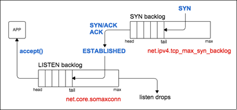

一、常用监控命令
1.1 netstat
1.1.1 查看socket信息
常用参数:
- a, 显示全部
- -n, 避免反向解析ip名称
- -t, 只显示tcp套接字
-p, 显示进程相关信息
1
2
3
4
5
6
7
8
9
10
11
12
13
14
15Active Internet connections (servers and established)
Proto Recv-Q Send-Q Local Address Foreign Address State PID/Program name
tcp 0 0 0.0.0.0:9999 0.0.0.0:* LISTEN 31258/python3.6
tcp 0 0 0.0.0.0:80 0.0.0.0:* LISTEN -
tcp 0 0 0.0.0.0:22 0.0.0.0:* LISTEN -
tcp 0 0 0.0.0.0:8888 0.0.0.0:* LISTEN 20567/python3.6
tcp 0 0 0.0.0.0:8889 0.0.0.0:* LISTEN 11735/python3.6
tcp 0 0 0.0.0.0:443 0.0.0.0:* LISTEN -
tcp 0 0 172.26.175.115:35619 172.26.175.116:8888 TIME_WAIT -
tcp 0 0 172.26.175.115:443 139.207.107.151:35436 ESTABLISHED -
tcp 0 0 172.26.175.115:27701 172.26.175.116:3306 ESTABLISHED 20572/python3.6
tcp 0 36 172.26.175.115:22 183.14.135.253:64234 ESTABLISHED -
tcp 0 0 172.26.175.115:17751 172.26.175.115:8888 TIME_WAIT -
tcp 0 0 172.26.175.115:27749 172.26.175.116:3306 ESTABLISHED 20576/python3.6
tcp 0 0 172.26.175.115:443 112.10.89.167:6956 ESTABLISHED -Proto, 表示套接字的协议，我们通常观察tcp套接字
- 对于listen的socket
- Recv-Q, accept queue中存在的全连接socket
- Send-Q, accept queue的长度
- 对于非listen的socket:
- Recv-Q, socket的内核接收缓冲区
- 接收缓冲区满后, 没有读出来, 可能会导致对端的发送缓冲区撑满，进而对端的同步发送函数会阻塞。
- 接收缓冲区空时，同步socket的读函数会阻塞。
- Send-Q, socket的内核发送缓冲区
- 写socket的函数返回后，代表用户态数据交给了内核发送缓冲区，但是不代表数据已经发送到对端。
- 发送缓冲区满后，会导致同步socket写函数阻塞
- Recv-Q, socket的内核接收缓冲区
- Local Address, socket的本地地址
- Foreign Address, socket的对端地址
- state, socket所处的状态
- PID/Program name, 持有该socket的进程信息
1.1.2 查看系统协议栈的全局情况
1 | $ netstat -s |
1.2 路由表
路由表的命令有两种:
ip route show table ${table}, 显示指定路由表- table表示路由表, 通常可选:local, default, main, all, 其中all表示显示全部路由表。
- 不指定table时, 默认选手main路由表的信息, 这个表中有回环的路由信息, 优先级最高。
/etc/route2/tb_tables, 保存了当前Linux的所有路由表.ip rule, 显示当前路由表的选择策略.不仅可以根据源ip选择使用哪个路由表, 也可以显示各个表的路由表优先级。值越小优先级越高。
route -n, 查路由表,- 在一个路由表中, 可能一个目标地址有多个匹配，路由表会采取最精确匹配。
1.3 ifconfig
查网卡状态
1.4 ss
netstat被ss代替了, ss的执行速度更快。ss的参数兼容netstat，也有自己的一套命令
1.5 arp
查看arp缓存, arp -n可以直接显示ip
1.6 sar
sar -n DEV 1, 查看网卡相关的收发包信息sar -n TCP 1, 查看TCP相关的收发包信息sar -n IP 1, 查看IP相关的收发包信息
1.7 nmap
这个不是linux自带的，centos需要通过yum -y install nmap来进行安装。该命令可以用于扫描端口。nmap -sT -p ${port} ${ip}, -sT表示建立TCP的三次握手。
1.8 ping
主要讲几个参数:
- -f, flood, 洪水一般的发包, 尽可能多的发包。
- -s, 指定一个包的长度。
二、网络协议分层体系
ISO/OSI网络模型:
- 应用层
- 会话层
- 表现层
- 传输层
- 网络层
- 链路层
- 物理层
TCP/IP协议模型:
- 应用层
- 传输层
- 表现层
- 链路层
- 物理层, TCP/IP协议模型不包括该层, 但是承认该层存在。
2.1 链路层
解决网络拓扑结构问题，我们常用的是总线型结构。不同的组网形式，底层的通信协议不一致，链路层将底层通信协议输入输出接口统一, 也约定了不同的组网如何进行通信。
需要注意arp既不属于链路层，也不属于网络层。
链路层称数据为Frame, 帧。
2.2 网络层
链路层确定了各个局部的组网, 网络层将不同的组网联系起来。网络层称数据为Packet, 报文。
2.3 传输层
解决传输的质量问题。传输层称数据为Segment, 段。
三、Socket
socket属于内核空间。1
int socket(domain, type, protocol)
- domain, 通过
AP_INET指定IPvs类型的socket。 - type, 选择udp(
SOCKET_DGRAM)和tcp(SOCKET_STREAM)。 - protocol, 基于ip协议，通常填0
3.1 常用相关参数
创建完socket后，可以在程序里可以控制一下参数setsocket():
SO_LINGER, 用于控制socket函数close和shutdown的行为.- 正常情况下， linger关闭, 关闭者发起FIN包，走正常的四次挥手关闭。
- linger配置打开，关闭者直接发RST包，自己就关闭了，不走四次挥手。可以作为
time_wait过多时的第二方案。 - 直接发rst进行关闭，会直接忽略内核发送缓冲区的数据，直接进行关闭。
SO_RCVBUF, socket的内核接收缓存- 若建立socket没有指定rcvbuf大小，会采用
/proc/sys/net/core/rmem_default的大小 - 若人为设定了值，实际使用的是该值翻倍后的大小，但是不能超过
/proc/sys/net/core/rmem_max，若超过了会被限幅。
- 若建立socket没有指定rcvbuf大小，会采用
SO_SNDBUF, socket的内核发送缓存- 若建立socket没有指定rcvbuf大小，会采用
/proc/sys/net/core/wmem_default的大小 - 若人为设定了值，实际使用的是该值翻倍后的大小，但是不能超过
/proc/sys/net/core/wmem_max，若超过了会被限幅。
- 若建立socket没有指定rcvbuf大小，会采用
SO_REUSEPORT, 新版本内核的配置，让多个进程可以在同一个socket上监听，老版本如果多个进程监听同一个socket，会有惊群现象。
3.2 listen
1 | int listen(int sockfd, int backlog); |
主要是强调下backlog参数, 这个是AcceptQueue队列的大小，即全连接队列的大小。listen_sock.accept()就是在AcceptQueue中获取全连接状态的socket的。
/proc/sys/net/core/somax_conn中记录了AcceptQueue队列长度的最大值, backlog参数若超过该值则实际队列大小取该值。- 补充下
/proc/sys/net/ipv4/tcp_max_syn_backlog记录了SynQueue队列长度的最大值。这个状态是很占内存的，不能设置太大。
3.3 syn flood
在建立三次连接的时候，客户端发送了syn包，服务器将会维持半连接，并将半连接的socket放在SynQueue空间中, 半连接状态非常耗费内存。
消耗内存的原因是，半连接要维护客户端的相关信息，等到客户端响应ack的时候，方便根据客户端的信息取出正确的半连接socket。
若恶意的客户端只发送syn包，不发送ack包，则服务器将会始终维护半连接socket，直到超时。客户端发起大量的syn包，撑满服务器的SynQueue，则服务器将会拒绝别的正常用户的syn包，无法和正常用户建立三次握手。
为了解决这样的问题，需要配置/proc/sys/net/ipv4/tcp_syncookies, 可以将客户端的连接匹配信息进行md5，避免消耗那么大的内存, 这样就能保存大量的半连接socket了。只会在SynQueue撑满时，才会进行md5的处理。
3.4 文件描述符限制
因为socket其实也是文件描述符，这里给出文件描述符的个数限制
/proc/sys/fs/file-max, 定义了最多的文件描述符个数/proc/sys/file-nr, 显示了3个数字:${已经使用的fd个数} ${可以被回收的fd个数} ${最多的fd个数}ulimit -n
TCP核心点
建立链接
断开链接
TIME_WAIT相关的配置:
/proc/sys/net/ipv4/tcp_max_tw_buckets, 限制了timewait状态的socket个数。- 需要注意，timewait的socket虽然不怎么占资源，但是timewait的socket在内部维护了红黑树，为了平衡红黑树的代价会很大，内核占cpu的比例会上升。
- 为了避免内核占cpu的比例上升，可以把这个值改小。改小后，可能会导致不可靠关闭的可能性增加，另一端的等待延时可能会增加。
/proc/sys/net/ipv4/tcp_tw_recyle/proc/sys/net/ipv4/tcp_tw_reuse
连接队列
连接队列分为两种:
- 半连接队列, 服务器接收到客户端发送的SYN包后就会建立半连接，并将半连接放入
syns queue。 - 全连接队列, 服务器接收到客户端响应的ACK包后，会将连接从
syns queue移动到accept queue。 - 上面两种均统称backlog。
建立连接和队列:
状态变更和队列:

- syns queue的大小由
net.ipv4.tcp_max_syn_backlog参数决定 accept queue的大小由
listen(fd, backlog)中的backlog参数和net.core.somaxconn参数一同决定，取最小值。syns queue如果满了
syncookies=0且tcp_abort_on_overflow=0, 服务器会直接忽略掉新的SYN包。syncookies=0且tcp_abort_on_overflow=1, 服务器会响应RST包。syncookies=1服务器会对客户端信息进行hash以映射到半连接socket，理论上此时可以无限制半连接个数。
- accept queue如果满了
tcp_abort_on_overflow=0, 则会直接忽略掉三次握手最后的ACK, 但是不会从syn queue中删除。会重发syn+ack，触使客户端重发ack，若此时accept queue有空则将连接设置为全连接。若多次重试也没有empty，则最终服务器发送RST。tcp_abort_on_overflow=1, 服务器会直接响应RST，拒绝连接。
附录、工作中遇到的问题
只做个人记录
1.响应502问题
- 问题背景: 现网A请求返回502
- 问题特征:
- 1.ngx的错误日志记录后台upstream server没有一个可用。
no live upstreams while connecting to upstream - 2.ngx没有core, server也没有core，502响应为偶现。
- 3.人为循环发起该请求，可以复现502响应，1分钟会出现10次左右。
- 4.测试环境不会响应502。
- 5.server的TIME WAIT状态的socket量很大。
- 1.ngx的错误日志记录后台upstream server没有一个可用。
- 问题原因
- 1.定位后发现，server有大量的B请求响应404。server并未在http上注册对请求B的处理。
- 2.大部分http服务器对响应404的连接会直接断开，实际上就是断开的server和ngx的连接，导致server存在大量TIME WAIT。
- 3.server频繁断开连接，TIME WAIT过多，对应ip和端口的socket被耗尽, 导致ngx无法重新连接server, 该server的其他请求会直接在ngx返回502 。
- 问题解决：
- 1.ngx直接拒绝掉B请求。
- 2.或可以在服务器上注册请求B, 进行返回错误的处理。若业务没有特殊需要，建议使用上一种解决方法。